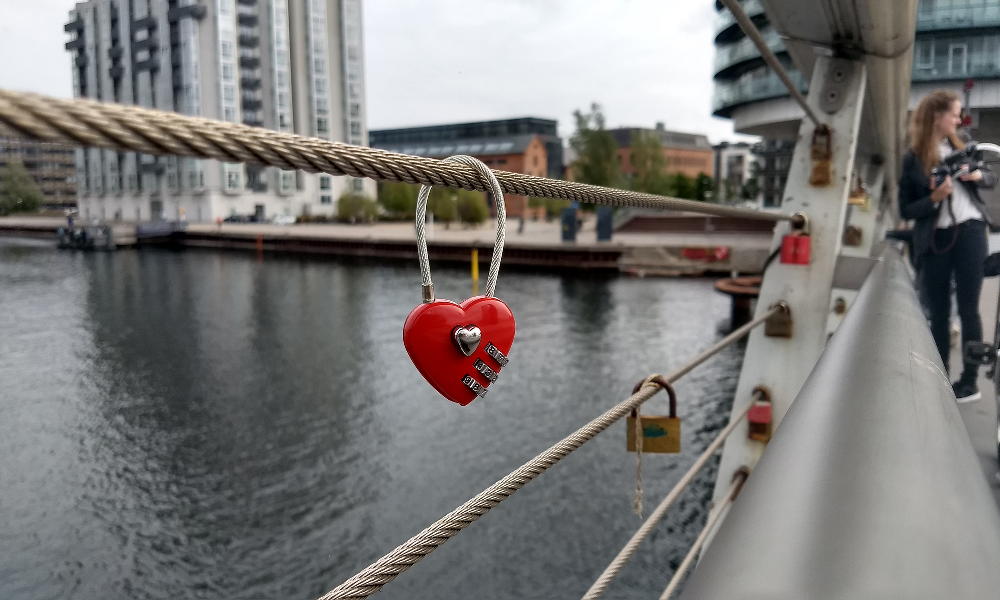
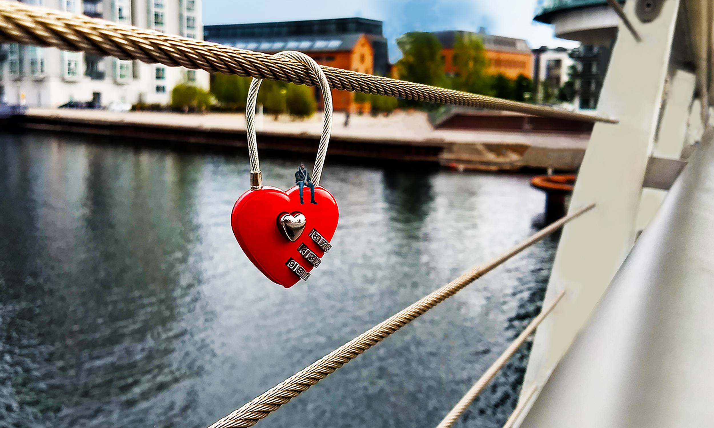

Bro projekt
I vores første projekt, fik jeg til opgave at tage billeder af diverse broer rundt omkring i københavn. Derefter skulle vi vælge et af vores billeder og redigere den.
- Fjern et element: Noget på billedet skal fjernes og baggrunden (hullet bagved) skal fyldes ud så det passer med billedet.
- Tilføj et element: Noget som ikke oprindeligt var i billedet, skal sættes ind, så det ser ud som om, det var der fra starten.
- Ret billedets lysforhold eller tilfør billedet en stemning ved filter eller farvetoning
- Beskæring og evt opretning (lodret/vandret) af billede.
- Format og størrelsen: billedet skal være i format 4:3 og gemmes så størrelsen er ≦ 1 M pixel
Billedet til højre er den færdig redigeret billede fra bro proektet. I den har jeg redigeret billedet lys, farve, vibrance, contrast og saturation. Samt har jeg fjernet mange af de elemneter som fjernet fokus fra billedets centrum. Jeg har også tilføjet en lille mand der sidder på hjertet.

Før redigering..

Efter redigering..